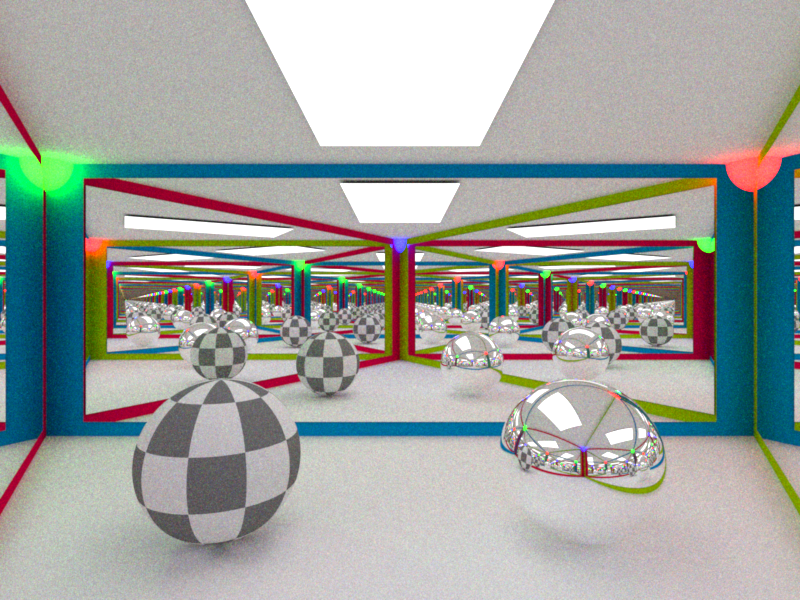
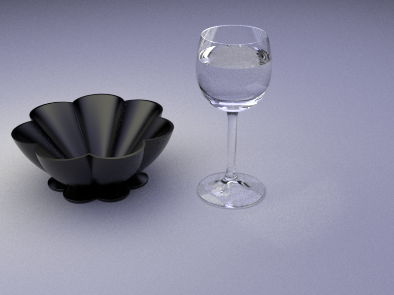
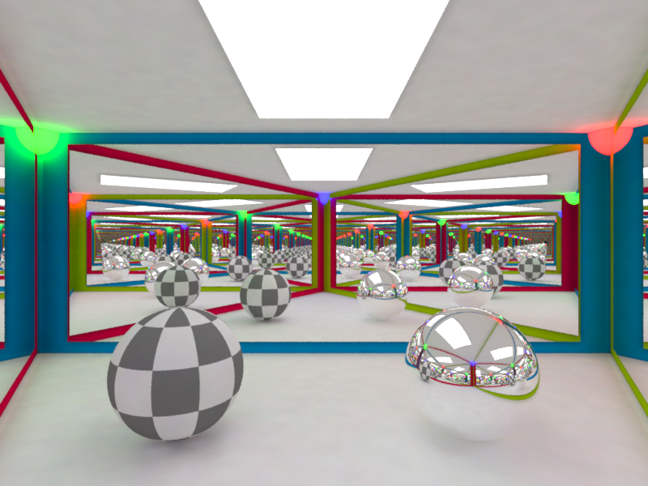
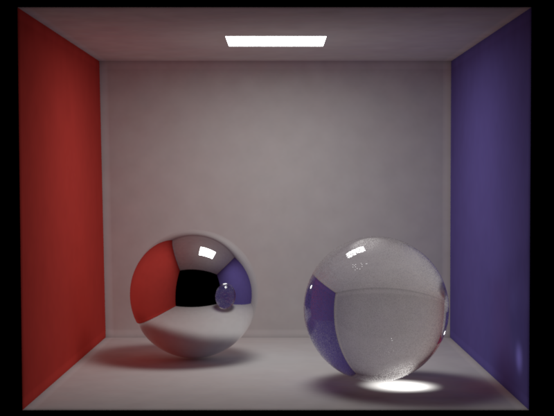
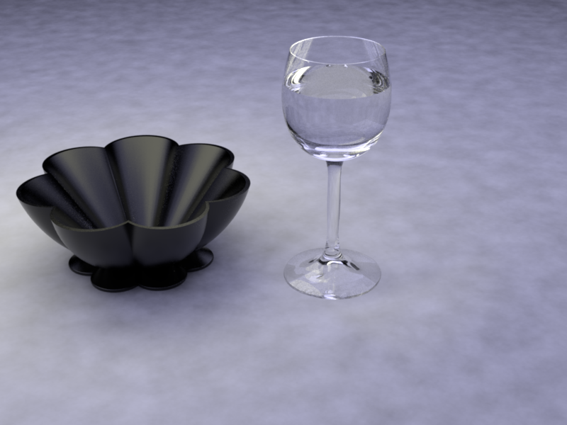
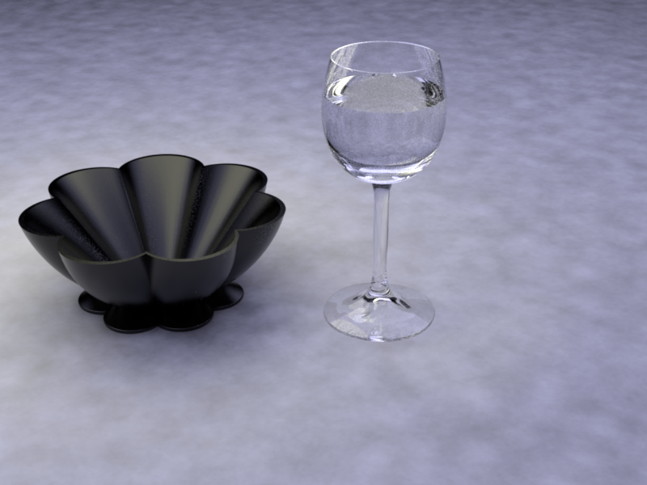
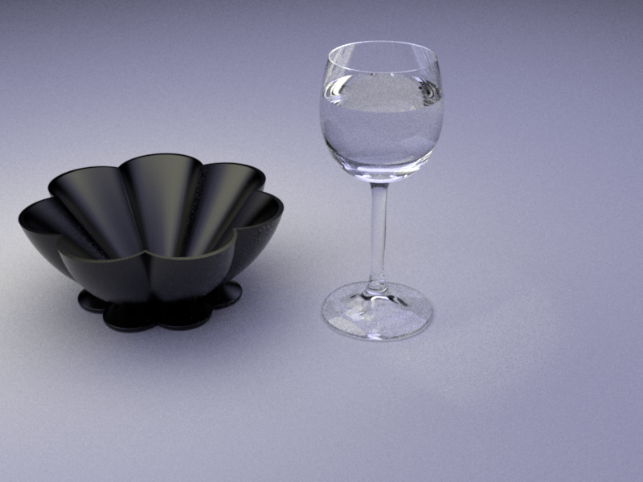
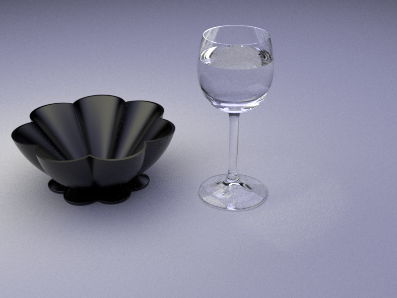

**Homework 4 - Global Illumination**
Student Name: Wu Zhanyi
Student ID Number: 22-737-266
Did you attend the exercise handout? Watched the recording
(Note: please read the [supplementary](#supplementary) section first before working on this report.)
# Part 1: Dielectric BSDF
**Time spent on this task:1h**
**Describe your implementation of `Dielectric` class.**
First find out the direction of the ray. If it's from inside of material, flip the eta and normal.
Another thing needs to be noticed is total internal reflection, a special case in refraction. When $\sin(t)$ is larger than 1, then it is total internal reflection.
# Part 2: Path Tracing
## BSDF Sampling
**Time spent on this task: 20 min**
**Describe your implementation of `path_mats`.**
It's quite similar to _direct_mats_. The first thing needs to be done is Russian roulette. It should start from the third bounces.
Besides, the paththrough is also needed. Here I used path re-use since it can make code cleaner and simpler in structure.
## Multiple Importance Sampling
**Time spent on this task:30 min**
**Describe your implementation of `path_mis`.**
Similar to the previous task, except manually set $w\_mat$ to 1 when samples from a discrete BSDF.
## Validation
**Comparison: CGL Triangle**

**Comparison: Cornell Box**
**Comparison: Table**

# Part 3: Photon Mapping
**Time spent on this task: 2h**
## Photon Emission from Shape Area Lights
**Describe your implementation of `AreaEmitter::samplePhoton(...)`.**
Sample the surface, set the continue ray and then return the power $\pi * A * L_e$
## Photon Tracing and Storage
**Describe your implementation of `PhotonMapper::preprocess(...)`.**
Similar to _path_mats_, here I don't even need to consider $L_e$. Just store photons when intersects with none discrete surface.
## Rendering/Radiance Estimation
**Describe your implementation of `PhotonMapper::Li(...)`.**
Along the ray, when the ray intersects with surface, first computes its $L_e$. Then search the photons around the intersection. If any, add their power up.
The density should be $\frac { \sum {power* bsdf}}{\pi * r^2 * n}$
## Validation
**Comparison: CGL Triangle**

**Comparison: Cornell Box**

**Comparison: Table**


**Comparison: Clock**
# Feedback
**Use this section to provide feedback about this assignment (each task, the handout, Nori, etc.). We appreciate your opinions to help improve future homeworks and projects.**
...
# Supplementary
* For each task, please note down the time you spent working through it and use at least a few sentences to describe your implementation. If applicable, also report the problems you encounter (e.g. whether or how it's solved, what is the difficult part).
* Please let us know to what extent your code is working (e.g. you only managed to work through part of this assignment, or your solution doesn't operate as expected in some corner cases). We encourage you to share your thinking process, and points will be granted based on your description even if the code is not 100% functioning.
* Nori generates both EXR and PNG format output. Please use PNG for image comparison in the report.
* This report template uses [Markdeep](https://casual-effects.com/markdeep/), which supports Markdown syntax in HTML file. For example usage, please refer to the [official demo document](https://casual-effects.com/markdeep/features.md.html).
* LaTeX is also supported for typing mathematical formulas:
$$
L_o(\mathbf{x}, \omega_o) = \int_{\Omega} L_i(\mathbf{x},\omega_i)\, f(\mathbf{x}, \omega_i, \omega_o)\, |\cos\theta_i|\, \mathrm{d}\omega_i
$$
 
